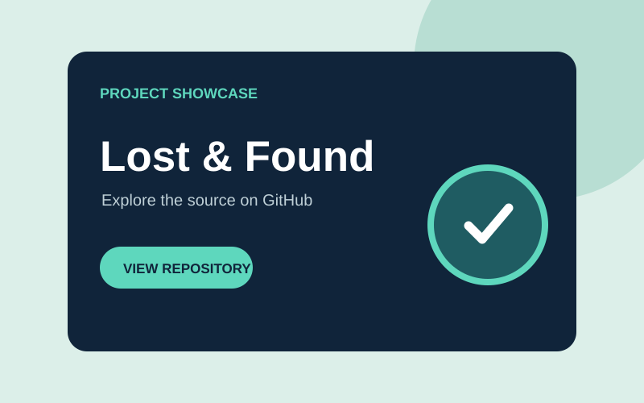
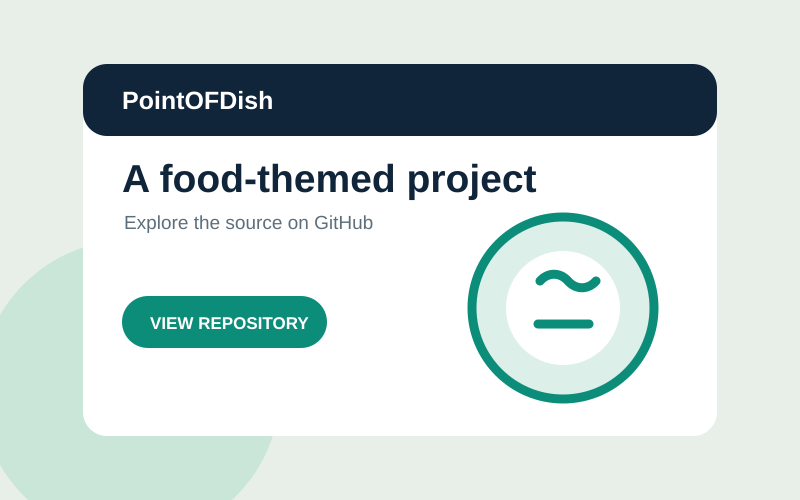
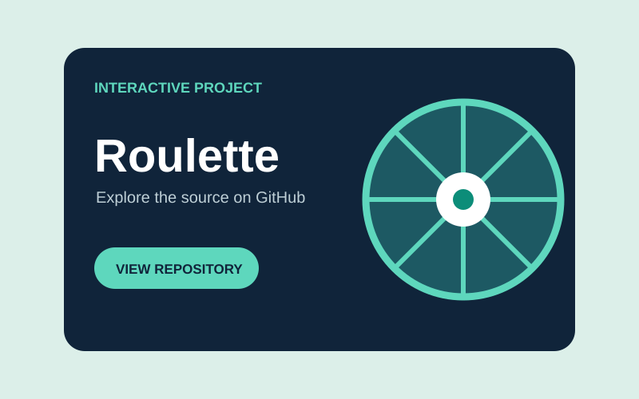

COLLEGE
Davao del Norte State College
Bachelor of Science in Information Technology (BSIT)
Studying information technology with an interest in web development and practical problem solving.
Hello, I'm Jaymar
Jaymar C. Lomocso Information Technology Student & Aspiring Web Developer
I enjoy turning ideas into clear, accessible websites. I’m growing my skills through coursework, hands-on projects, and collaboration.
01 / About me
I’m an Information Technology student exploring how design and technology can make useful experiences feel effortless.
My goal is to become a web developer who builds accessible, responsive websites and continues learning from real-world challenges and collaborative teams.
02 / Education
My academic path is building a foundation in technology, design, and practical problem solving.
Bachelor of Science in Information Technology (BSIT)
Studying information technology with an interest in web development and practical problem solving.
CSS strand
Studied in the CSS strand before continuing to college.
Add your attendance or graduation year here if you wish.
03 / Skills
These example levels are editable estimates; update them to reflect your own confidence before publishing.
Always learning, always building. The best skill is staying curious.
04 / Selected work
Explore three repositories from my GitHub profile. The previews are illustrations; open each repository for its code and full details.

A lost-and-found project from my GitHub collection. Visit the repository to explore its features and code.
Tech stack: see repository

A food-themed project in my portfolio. Visit the repository for its implementation and details.
Tech stack: see repository

A roulette-themed project. Visit the repository to see how it works and browse the source.
Tech stack: see repository
No projects in this category yet.
05 / Experience
I’m building experience through coursework, class teamwork, and personal practice while I continue to learn.
School assignments have given me opportunities to research ideas, solve problems, and present my work clearly.
COURSEWORKGroup activities help me practice sharing ideas, listening to classmates, and doing my part to finish tasks on time.
TEAMWORKI explore web development through small projects and use what I learn to improve the work I share on GitHub.
SELF-LEARNING06 / Connect
I’m interested in learning opportunities, thoughtful projects, and connecting with people in technology.
Send an email